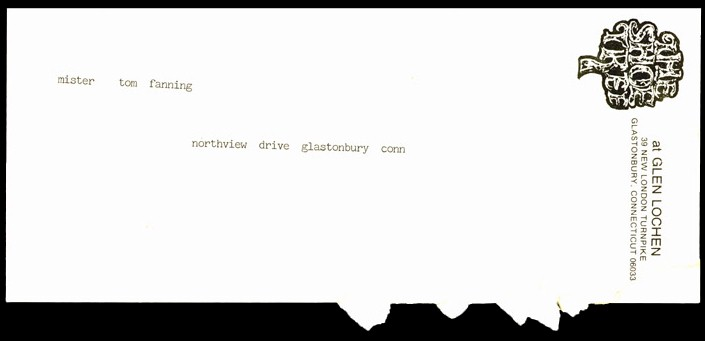

|  |
|
"Although so much information was lost during the Great Drought that we may never know for certain, many scholars now believe that the 'dear mr thomas' letters, as they came to be called, were written by the children of Mountain 14 in their sleep." --Arthur Fisk, from his article "Remaking the Mountain: A Critical Study of Hoskins' Literary Fragments." |
next |